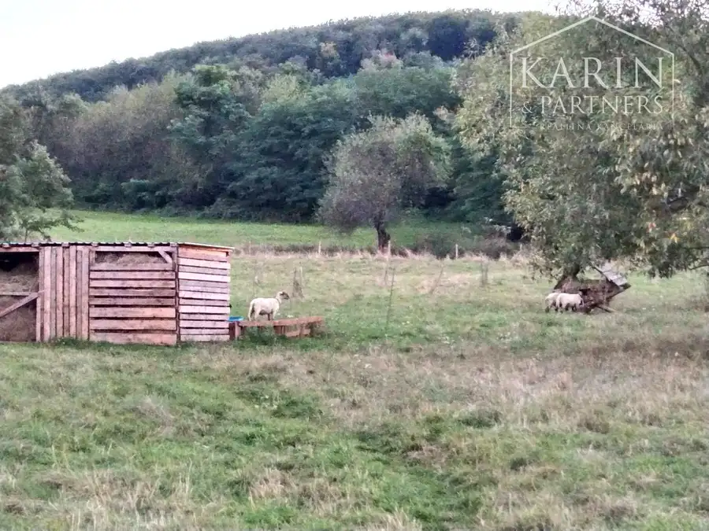
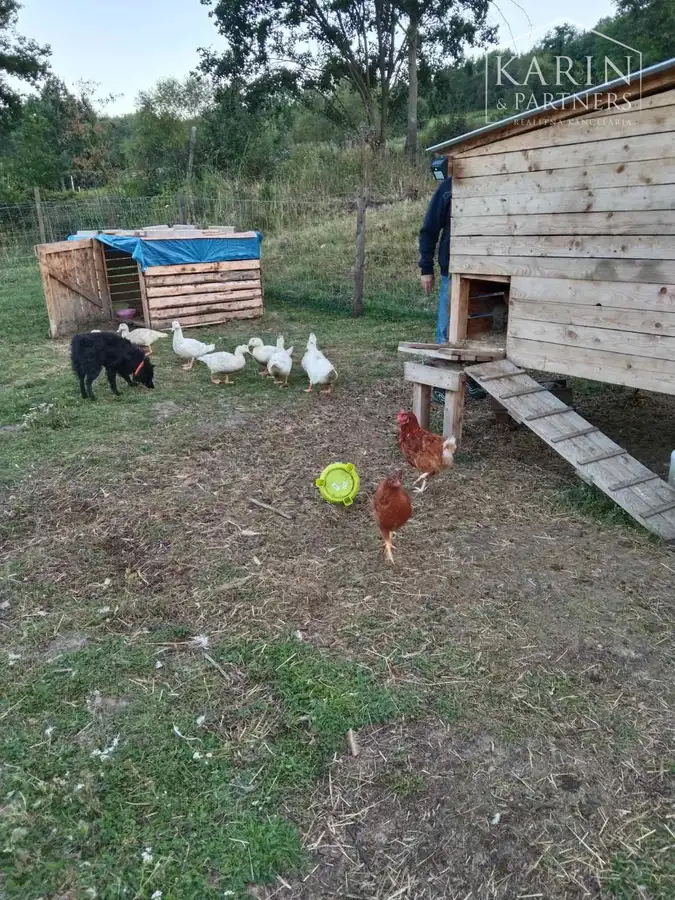
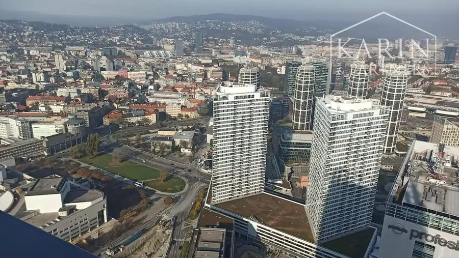
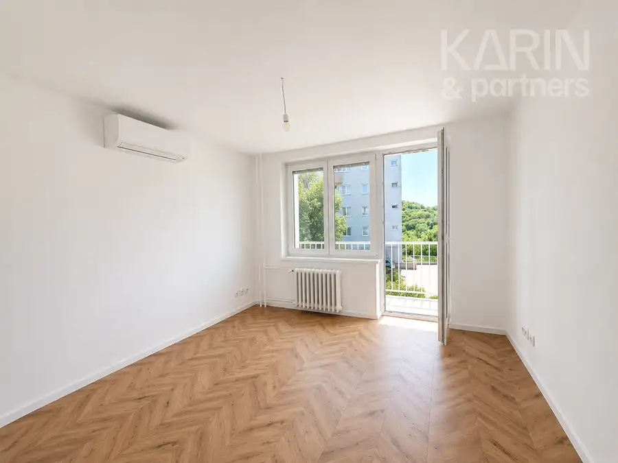
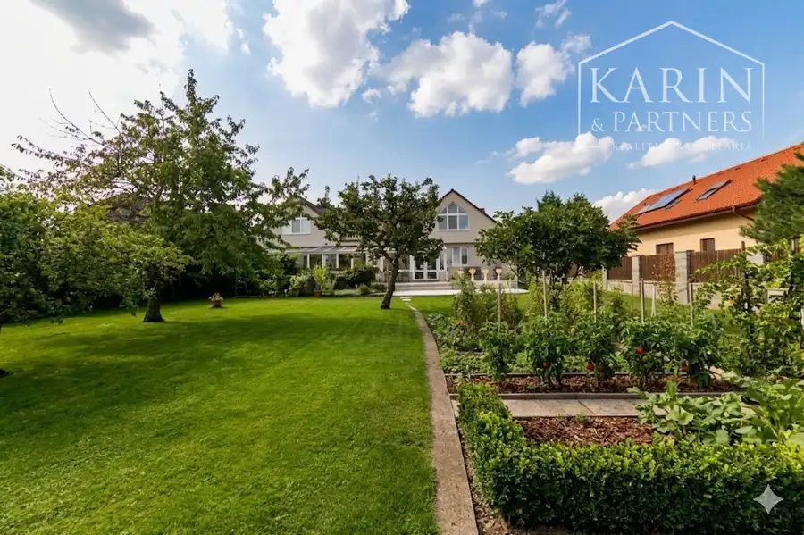

Predaj-rodinný dom - usadlosť s pozemkom 33 000 m² | Horné Plachtince | okres veľký Krtíš
Horné Plachtince


- Plocha90 m²
- StavNovostavba
- VlastníctvoOsobné
O nehnuteľnosti
Realitná kancelária KARIN & PARTNERS ponúka vo výhradnom zastúpení na predaj jedinečnú farmársku usadlosť s rodinným domom a rozsiahlym pozemkom o výmere až 33 000 m² v obci Horné Plachtince (okr. Veľký Krtíš).Táto nehnuteľnosť predstavuje ideálne spojenie bývania, podnikania a života v prírode – bez susedov, bez ruchu, iba Vy a príroda.PREČO PRÁVE TÁTO NEHNUTEĽNOSŤ?✔ absolútne súkromie – len 1 km od obce✔ okamžite obývateľná novostavba (2022)✔ vlastný zdroj pitnej vody✔ rozsiahly pozemok vhodný na farmu či podnikanie✔ priame napojenie na prírodu – potok na hranici pozemkuVYUŽITIE, KTORÉ MÁ BUDÚCNOSŤTáto usadlosť je ideálna pre:farmu alebo rodinné hospodárstvo, chov koní, oviec, hydiny či iných zvierat, agroturistiku alebo vidiecke ubytovanie, mini ZOO alebo ekologický projekt, pokojné celoročné bývanie mimo mestaZÁKLADNÉ INFORMÁCIEcelková výmera: 33 000 m²zastavaná plocha a nádvorie: 13 924 m²trvalý trávny porast: 19 451 m²ovocný sad: cca 50 stromov (jablone, čerešne, gaštany a iné)RODINNÝ DOM – NOVOSTAVBA 2022Moderný modulový bungalov s terasou:podlahová plocha: 60 m²zastrešená terasa: 30 m²Dispozícia:vstupné zádverie, obývacia izba s kuchyňou, spálňa so šatníkom, samostatný šatník, kúpeľňa s WC, skladTechnické vybavenie: podlahové elektrické kúrenie, elektrický bojler, príprava na klimatizáciu, vlastná studňa (60 m – pitná voda), žumpa (14 m³), elektrina, prístup po asfaltovej cestePOZEMOK A HOSPODÁRSTVOAktuálne využívané na chov zvierat a bývanie.Na pozemku sa nachádza: hospodárska šopa, zajačník, výbehy pre hydinu, krmelec, oplotené časti pre zvieratá, prírodný prameňLOKALITA – PRÍRODA NA DOSAHUsadlosť sa nachádza v krásnom prostredí Čerbovskej pahorkatiny.✔ Plachtinský potok priamo na hranici pozemku✔ pokojná lokalita bez rušivých vplyvovVzdialenosti: Veľký Krtíš – 4 km, Šahy – 41 km, Krupina – 40 km, krajské mesto – cca 80 kmCENA: 168 000 EURAk hľadáte miesto, kde môžete žiť slobodne, podnikať a zároveň si užívať ticho prírody, táto ponuka je pre Vás výnimočnou príležitosťou.Neváhajte ma kontaktovať a dohodnite si obhliadku.KONTAKTEdita Adrianová0948 056 116adrianova@karinpartners.skwww.karinpartners.sk/adrianova
Parametre
- Druh
- Farmárska usadlosť
- Dátum zverejnenia
- 03. 10. 2025
- Orientácia
- Juhozápadná
- Plocha pozemku
- 33000 m²
- Plocha terasy v m2
- 30 m²
- Počet izieb / miestností
- 3
- Počet nadzemných podlaží
- 1
- Rok výstavby
- 2022
- Stav nehnuteľnosti
- Novostavba
- Terás
- 1
- Terén pozemku
- Rovinatý
- Typ
- Predaj
- Typ konštrukcie
- Drevená
- Vlastníctvo
- Osobné
- Vybavenie
- Terasa, Sklad, Technická miestnosť
- Vykurovanie
- Podlahové, Lokálne
- Zariadenie
- Čiastočne zariadené
- Zastavaná plocha
- 60 m²
- Úžitková plocha
- 90 m²
Kde to je


Mohlo by Vás zaujímať

BytNové 300 000 €Súrne hľadáme pre konkrétneho klienta 2-izbový alebo 3-izbový byt v Bratislave i, II, III Staré Mesto, Bratislava 2-izbový60 m²
BytNové 1 050 €PRENÁJOM | Zrekonštruovaný 3-izbový byt s balkónom ( samostatné izby ) – Bratislava - Kramare. Nové Mesto, Bratislava 3-izbový72 m²2. podlažie
DomNové 730 000 €PREDAJ: Nadštandardný rodinný dom s dvomi bytovými jednotkami – Bratislava, Vajnory Vajnory, Bratislava 424 m²